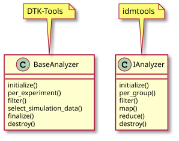

Convert analyzers from DTK-Tools to idmtools¶
Although the use of analyzers in DTK-Tools and idmtools is very similar, being aware of some of the differences may be helpful with the conversion process. For example some of the class and method names are different, as seen in the following diagram:

For additional information about the IAnalyzer class and methods, see IAnalyzer.
In addition, you can also see an example of a .csv analyzer created in DTK-Tools and how it was converted to idmtools. Other than the class name and some method names changing the core code is almost the same. The primary differences can be seen in the class import statements and the execution of the analysis within the if __name__ == ‘__main__’: block of code.